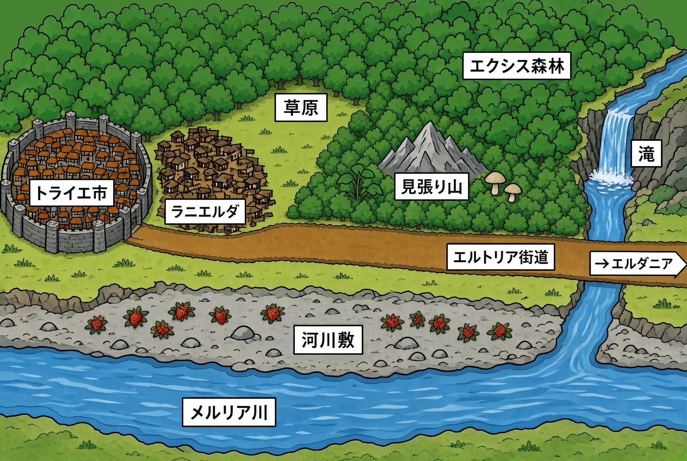

スラム街
八年前のモンスターの暴走「スタンピード」で崩壊したエルダニアからやってきて住民が集まってできたトライエ市の外側にあるスラム街。
実質的には難民キャンプだが、それが固定化して町を形成している。本作の主要舞台。
ラニは「似ている」の意＋エルダニアの合成語。
ゼッケンバウアー伯爵領／領都
城塞都市。中規模の都市で、比較的平和が保たれている。スラム街の住民は昼間、トライエ市の仕事を請け負って夜にはスラムへ帰る生活をしている。
冒険者ギルド、領主館、鍛冶師、教会、商会、様々な専門店、雑貨屋、住居などが含まれる。
元ドリアンドン伯爵領／元領都
八年前のスタンピードで崩壊して以来、人はほとんど住んでいない。城壁内も荒地と化しており、家々は取り壊されて薪にされている。
現在はゼッケンバウアー領からの派遣20名程度が、簡易的に生活して管理業務にあたっている。
領主はスタンピードの際に逃げ出して以降、行方不明のまま放置されている。
ゼッケンバウアー伯爵領
エクシス森林の中にある小さな町。
エルトリア街道の中間地点にあり、宿場町としてひっそりとしたにぎわいを見せる。
ゼッケンバウアー伯爵領
シエルの故郷。トマト栽培が盛んな小さな村。
メルリア王国首都
国王の居城がある政治の中心地。トライエ市から見て東の先にある。
メルリア川の河口にあり、海に面しているため貿易の拠点でもある。
物語の主要舞台
メルリシア、ゼッケンバウアー、ドリアンドンなどの領地がある王国。
メルリア川周辺のメルリア大平野を主な領地としている。
エルフ国
メルリア王国の北側に広がる山向こうの国。エルフが支配しており、エルフ至上主義を掲げる。
メルリア王国の北東隣りに広がる大きな帝国。遊牧民族で干し肉の産地。良い港を持たないため、港湾機能をメルリア王国に依存している。
メルリア王国の西側に広がる国。魔法使いのマギ族が貴族をしている国。内乱が起こり戦争の気配がある。
メルリア王国とエルフ国を隔てる北側の山脈。
ベリダルタル山脈中央にある大きな火山。西砦と東砦、温泉町がある。
メルリア川の南側に広がる、南北に国を隔てる山脈。名称不明、未登場。
スラム街の横にある草原。スラム街を建てる建材を切り出したので切り株ばかりある。案外、有用植物やキノコが点在しているが、住民は食中毒を恐れて採取を控えている。
スラム街のすぐ近くの森の中にある、小高い山。頂上に見張り小屋があり入れ替わりの騎士団が常駐している。
見張り山周辺にはホーンラビットが多く生息している。
スラム街の外側にある広い森で、エルダニア付近まで広がっている。素材などが豊富でゴブリンなども住む。
エルダニアとトライエ市をつなぐ主要街道。エルダニアからはさらに王都まで街道がつながっている。
スラム街からエルトリア街道を横断した南側にあるメルリア川の河川敷。
エドたちは釣り、採取などをして楽しむ。
西のマドルド王国を源流として東西に流れてトライエ市の南側を経由して王都まで流れる大河。
エクシス森林の中を南北に流れる川で、メルリア川の支流。
エクシス川の中流部にある滝。貴重な薬草が採れる場所として有名。

スラム街の南側、トライエ市東門前、エルトリア街道沿いにある商店。キオスク、コンビニ。
スラム街の北側、トライエ市北門前にあるライバル店的な存在。
スラム街の共有トイレ。南北の二か所にある。のちに中央にも新しく設置される。
スラム街に設置された、新しい手作りの小学校。
スラム街に設置されるべく提案された新しい防壁。モンスターから町を守るはずが……。
ラファリエ教の教会の一つ。町以上にはほぼ設置されている。白亜の教会と鐘つき堂がある。
トライエ市にある商会のひとつ。エドと取引をする。
ラファリエ教会トライエ支部の隣にあり、関連施設。
トライエ市にある商会のひとつ。エドと取引をする。
青色や緑色のゲル状生物。
一角うさぎ。肉が食べられる。
討伐すれば少ないけど報酬がもらえる。
ゴブリンのリーダーで大きくて強い。
巨体カタツムリ。身が食べられる。
卵を毎日生むモンスターの鳥。卵が食べられる。
イノシシ。森などに棲む巨体を持つ。牙が特徴的で大きい。肉は食べられる。
オオカミ。森などに棲み集団で活動をする。厄介な敵。肉は食べられる。
森などに棲む巨大なクマ。肉は食べられる。
森などに棲む凶暴で巨大なクマ。血に飢えているという噂がある。
エドたちはいくつもの植物を採取して食べたり、納品したりする。
身近な草花から、異世界固有種まで、バラエティ富んだラインナップが待っている。
キノコも食用になるものの、毒キノコもあり、鑑定が活躍する。